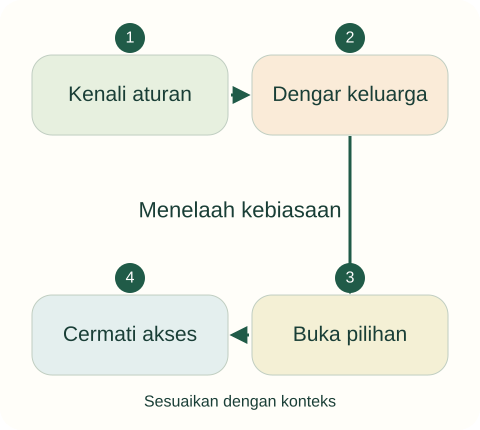

Tujuan pembelajaran
- Menjelaskan sosialisasi melalui kebiasaan
- Menganalisis dampak pengelompokan terhadap kesempatan belajar
- Merancang dialog dengan keluarga
Pendidikan mewariskan dan menafsirkan budaya
Bahasa, cerita, cara menyapa, dan praktik keluarga dapat masuk ke dalam pendidikan. Biesta (2009) menyebut sosialisasi sebagai salah satu fungsi pendidikan, yakni keterlibatan seseorang dalam cara hidup dan praktik bersama. Anak juga perlu mendapat kesempatan merespons dan memberi alasan. Guru dapat mengenalkan cerita keluarga atau permainan lokal sambil mengundang anak membandingkan cara memainkannya.
Kurikulum tersembunyi
Dalam pembahasan kehidupan kelas oleh Jackson (1968), kurikulum tersembunyi merujuk pada pesan yang dipelajari melalui aturan, pengelompokan, dan kebiasaan sehari-hari di luar tujuan tertulis. Jika anak selalu diarahkan ke area tertentu berdasarkan jenis kelamin, pembagian kesempatan mengirim pesan tentang peran yang dianggap sesuai. Guru dapat membandingkan siapa yang memperoleh pengalaman menyusun, mengukur, merawat, atau bermain peran ketika akses dibuka.
Membaca budaya bersama keluarga
Kerangka praktik sesuai perkembangan dari NAEYC (2020) menempatkan konteks sosial budaya sebagai salah satu pertimbangan. Guru dapat bertanya kepada keluarga apa yang mereka hargai dari sebuah kebiasaan, misalnya tanggung jawab membantu pekerjaan rumah atau kebersamaan. Pengaturan bermain dapat menjaga nilai saling membantu sambil memberi semua anak akses ke ragam tugas. Percakapan dengan keluarga membantu memahami arti kebiasaan sebelum mengambil keputusan.
Menguji perubahan secara proporsional
Pembukaan akses kemungkinan memperluas pengalaman, tetapi respons setiap anak dapat berbeda. Catat pilihan area, durasi keterlibatan, dan jenis tindakan yang dicoba pada beberapa kesempatan. Informasi ini membantu guru melihat apakah undangan yang sama memang memberi akses yang dapat digunakan. Bila bahan sulit dijangkau atau teman mengambil alih, penyesuaian perlu diarahkan pada hambatan yang terlihat.
Diagram konsep

Bagaimana satuan PAUD menjaga praktik budaya sambil membuka pilihan anak?

Pada awal bermain, orang dewasa membagi area balok untuk anak laki-laki dan dapur mainan untuk anak perempuan. Pada kesempatan berikutnya, dua keluarga mendampingi kegiatan dan semua anak diizinkan mencoba kedua area.
- Siapa yang dapat memakai tiap area pada adegan pertama?
- Apa yang berubah saat semua anak boleh memilih?
Pembahasan kasus
Guru menawarkan kedua area kepada semua anak, lalu menyediakan bahan dan contoh peran yang beragam. Keluarga dapat diajak membicarakan manfaat setiap kegiatan bagi perkembangan anak. Catat jenis pengalaman yang mulai diakses.
Buka contoh penalaran setelah mencoba
Tulis satu bukti bahwa pilihan yang dibuka benar-benar digunakan anak.
Catatan beberapa hari dapat menunjukkan siapa yang mulai memilih area baru dan kegiatan apa yang benar-benar dicoba.
Latihan terbimbing
Tinjau satu kebiasaan kelas, misalnya siapa yang diminta membawa benda atau merapikan alat. Jelaskan pesan yang mungkin diterima dan cara menguji dugaan Anda.
Latihan mandiri
Buat pembuka percakapan dengan keluarga yang ingin mempertahankan pembagian area bermain. Sebutkan nilai yang bisa dijaga, perubahan yang diusulkan, dan cara mengeceknya.
Lihat pembahasan
jenis kegiatan yang dicoba setiap anak pada beberapa kesempatan
Pilihan dan tindakan yang diamati berulang membantu melihat kesempatan yang benar-benar digunakan anak.
Refleksi calon pendidik
Aturan kecil apa yang tanpa disadari membatasi pengalaman sebagian anak di kelas?
Catatan hanya disimpan di peramban ini. Tidak dikirim kepada dosen.
Referensi dan bacaan pendamping
- Biesta, G. (2009). Good education in an age of measurement: On the need to reconnect with the question of purpose in education. Educational Assessment, Evaluation and Accountability, 21, 33–46.Kerangka konseptual untuk tiga fungsi pendidikan.
- Jackson, P. W. (1968). Life in classrooms. Holt, Rinehart and Winston.Rujukan klasik mengenai pesan yang dipelajari dari kehidupan sehari-hari di kelas.
- National Association for the Education of Young Children. (2020). Developmentally appropriate practice: A position statement.Kerangka profesi berbasis riset, bukan regulasi Indonesia. Pertimbangkan pola perkembangan, individualitas, dan konteks. Ringkasan konsep tidak menggantikan dokumen asli.
- United Nations. (1989). Convention on the Rights of the Child.Pasal 12 tentang kesempatan menyampaikan pandangan dan perhatian sesuai usia serta kematangan.